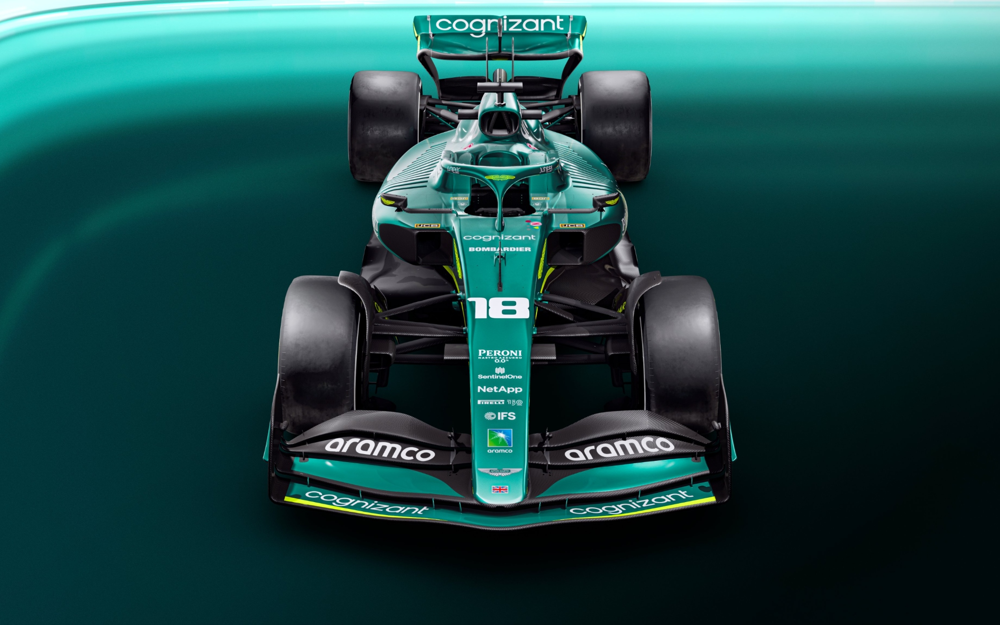

L'Aston Martin F1 Team, nota dal 2019 al 2020 come Racing Point, è una scuderia britannica di Formula 1 con sede a Silverstone. Dal 2022 viene iscritta al campionato mondiale di Formula 1 con il nome di Aston Martin Aramco Cognizant F1 Team, in base all'accordo di sponsorizzazione con l'azienda statunitense Cognizant iniziato nel 2021,[1] e a quello con l'azienda saudita Aramco, diventata co-title sponsor dal 2022. Il team è stato fondato da un consorzio guidato dall'investitore canadese Lawrence Stroll, dopo l'acquisto della scuderia indiana Force India.
Monoposto 2022
'Aston Martin AMR22 è una monoposto di Formula 1 realizzata dalla scuderia Aston Martin per prendere parte al campionato mondiale di Formula 1 2022. La base della livrea rimane il verde da corsa britannico utilizzato nella precedente AMR21. La differenza cromatica più evidente sta nelle striscie che percorrono tutta la vettura lateralmente, che passano dal rosa al verde fosforescente, complice l'abbandono dello sponsor BWT.[1] Passano al verde fosforescente anche i loghi Aston Martin. Il logo del title sponsor Cognizant, rimane sulle pance, sull'ala posteriore e sull'ala anteriore, mentre il logo del nuovo co-title sponsor Aramco domina il cofano motore e la parte posteriore dell'ala mobile, la quale è colorata con i colori verde e azzurro della stessa compagnia saudita, e lo si ritrova anche sul muso. Il logo Peroni Libera 0.0, viene spostato dalla pinna, dove adesso è presente una striscia verde fosforescente sopra il numero del pilota, alla parte anteriore delle pance.